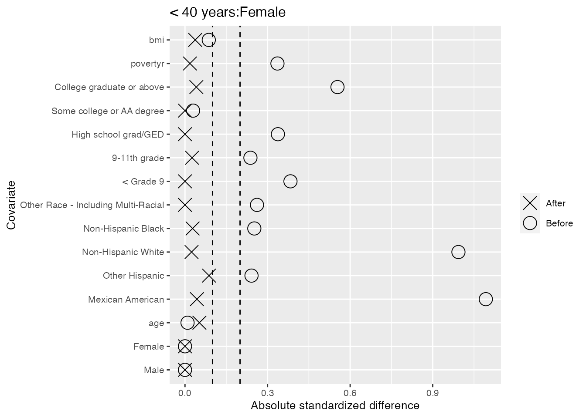
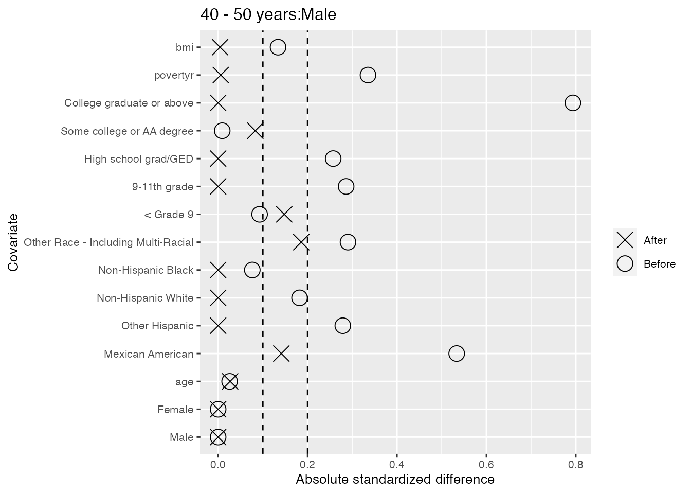
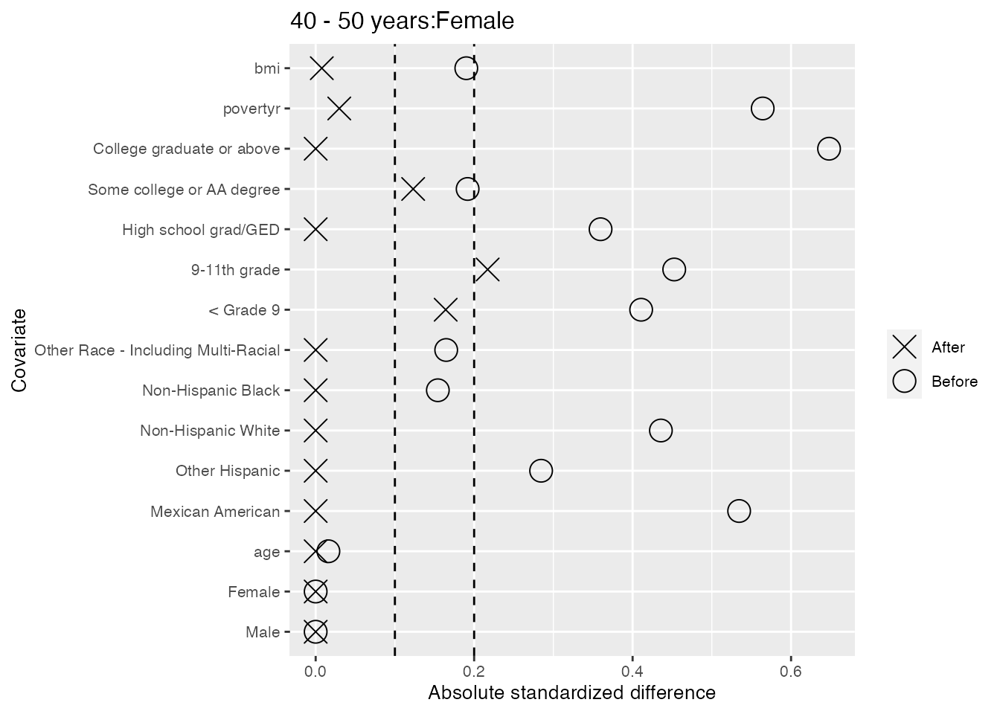
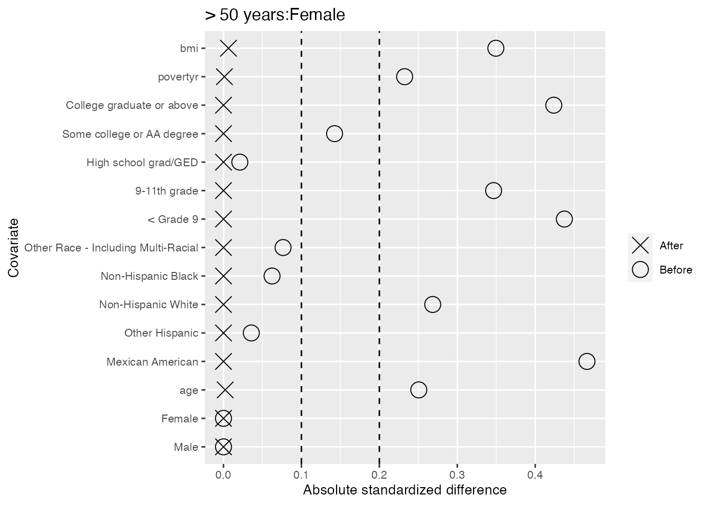
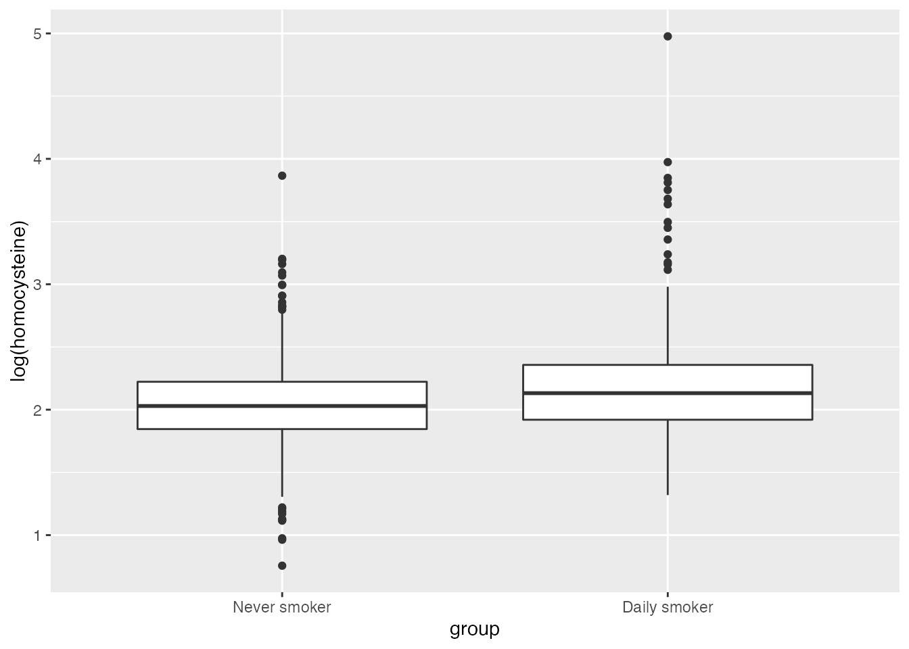

The natstrat package helps to create natural strata that balance many covariates.
Strata are groups of people or units that share certain traits.
Natural strata in particular have a fixed ratio of controls to treated units in every stratum. The fixed ratio allows us to combine strata, either when plotting covariate or outcome distributions or when calculating treatment effects, without needing to weight the individuals in different strata. This allows for simple plots, analyses, and interpretations.
To achieve a fixed ratio of controls to treated units within each stratum, a subset of controls will be selected to form the refined control group. While selecting this subset of controls, many covariates can be balanced. This assures that the control and treated groups are as similar as possible in terms of measured covariates, meaning that if there is no unmeasured confounding, the observed difference in the outcomes of the two groups is due to the treatment received by one group.
There are roughly 6 steps to an analysis using natural strata:
1. Create strata definitions
2. Select a ratio of controls to treated units
3. Specify which covariates should be balanced and how using generate_constraints()
4. Select the control units that achieve the fixed ratio and optimal covariate balance using optimize_controls()
5. Check whether the balance achieved was satisfactory using check_balance(). If not, change some aspects from steps 2-3 and repeat steps 4-5
6. Conduct outcome analysis and visualizations
We will demonstrate each of these steps using an extended example, and then go into Further details about some of the functions and arguments.
In this vignette, we demonstrate the use of the natstrat package with a motivating example of the effect of smoking on homocysteine levels using data from NHANES 2005-2006 that is provided in the package.
library(natstrat)
#> Loading required package: caret
#> Loading required package: lattice
#> Loading required package: ggplot2
data('nh0506')Our first step is to choose factors for our strata. We choose to stratify by age and sex, cutting age into three categories:
age_cat <- cut(nh0506$age,
breaks = c(19, 39, 50, 85),
labels = c('< 40 years', '40 - 50 years', '> 50 years'))
strata <- age_cat : nh0506$sexWe can now see how many treated and control units are in each of our strata. Our treated units are composed of daily smokers, whereas control units have never smoked. We look at the ratio of controls to treated units available in each stratum:
Natural strata are defined by having a fixed ratio of controls to treated units within each stratum, so we now select the fixed ratio of controls we will strive for. As the minimum ratio of controls to treated units available is 2.3, we set a fixed ratio of 1 for our natural strata. Note that we can select a noninteger ratio, such as 1.5 controls for every treated unit. However, if we select too large a ratio compared to the minimum available ratio, it will become difficult to balance covariates in this small dataset.
Our data contains 6 covariates, sex, age, race, education, poverty ratio, and bmi, that we’d like to be balanced between the control and treated groups. Sex is already balanced through the definition of the strata. While the strata force balance of our coarse age groups, we still seek to balance age more finely. We thus seek to balance age and our additional four covariates both across and within strata.
To do this, we generate balance constraints using the function generate_constraints() in the package. We must specify balance_formulas, z, and data.
balance_formulas: Here we specify a list of formulas that demonstrate the ways in which we want to balance. These formulas are extensions to R formulas, which follow many of the same conventions but have added functionality. Specifically, we include multiple terms on the left hand side, specifying the covariates we’d like to balance. On the right hand side, we explicitly specify 1 which indicates to balance these covariates across the whole population and is included implicitly unless - 1 or + 0 are specified. We also include on the right hand side our strata variable, indicating that we’d like to balance the covariates within each level of strata as well. To learn more about how to specify balance formulas, skip to the Balance formula syntax section below.z: Here we specify the 0/1 vector indicating control/treated status.data: Here we specify the data.frame that contains some or all of the covariates included in our balance_formulas.There are many additional arguments which can be adjusted to control the desired covariate balance. These can be found in the Additional generate_constraints() arguments section below. Here, we leave all additional arguments as the default.
constraints <- generate_constraints(
balance_formulas = list(age + race + education + povertyr + bmi ~ 1 + strata),
z = nh0506$z,
data = nh0506)
names(constraints)
#> [1] "X" "importances"
dim(constraints$X)
#> [1] 2928 105
length(constraints$importances)
#> [1] 105We see that the return of generate_constraints() is a list with two elements.
The first element, X, has a row for each unit and a column for each constraint. We see there are 105 constraints generated, which is much more than the 5 covariates entered on the left hand side of balance_formulas. This is because those 5 covariates imply 15 variables to balance: age, 5 levels of race, 5 levels of education, poverty ratio, missing poverty ratio, bmi, and missing bmi. Each of these 15 variables is balanced across the population and within each of the 6 strata. This leads to \(15 \cdot (1 + 6) = 105\) balance constraints.
The second element, importances, contains an entry for each of the 105 constraints, stating how important it is to balance that constraint. This plays a bigger role as you do more fine tuning as illustrated in the Balance formula syntax and Additional generate_constraints() arguments sections.
We now run the linear program and randomized rounding that will choose the best controls to balance our covariates. We input 5 arguments:
z: Treatment vectorX: Constraint matriximportances: Named vector of the importance of balancing each of the constraints in X
st: Strata vectorratio: Desired ratio of controlsAdditional arguments can be found in in the Additional optimize_controls() arguments section. One notable argument is solver, which is set by default to Rglpk. The other solver implemented is gurobi, and is highly recommended for use on larger data sets if available to you.
results <- optimize_controls(z = nh0506$z,
X = constraints$X,
importances = constraints$importances,
st = strata,
ratio = 1)
names(results)
#> [1] "objective" "objective_wo_importances"
#> [3] "eps" "importances"
#> [5] "selected" "controls"
#> [7] "rrdetails" "lpdetails"We see the return of optimize_controls() is a list with 8 elements. The most useful element is selected, which is a boolean vector stating whether each unit should be included in the analysis or not. This includes both treated and control units. The rest of the elements in the list are useful in analyzing the performance of the linear program and randomized rounding solutions, and are described in the help page for the function.
We now see how well we have balanced our covariates of interest, specified in the cov_data dataframe below. The check_balance function below will generate standardized differences for all variables in the specified X dataframe, whether or not they were included in the original optimization. The selected argument simply takes the selected element of the results of the optimization in the last step, and the plot argument is a boolean stating whether to generate ggplot objects containing love plots demonstrating balance.
cov_data <- nh0506[, c('sex', 'age', 'race', 'education', 'povertyr', 'bmi')]
stand_diffs <- check_balance(z = nh0506$z,
X = cov_data,
st = strata,
selected = results$selected,
plot = TRUE)
#> Excellent balance achieved across strata (<.1 standardized difference in all covariates).
#> The mean standardized difference across strata for the covariates is 0.018,
#> the median is 0.007,
#> and the maximum is 0.066.
#> Taking a weighted average of standardized differences within strata,
#> we have the mean covariate imbalance is 0.027,
#> the median is 0.014,
#> and the maximum is 0.092.
#> Within strata, we see imbalances (>=.2 standardized difference in some covariates in some strata).
#> The mean standardized difference within strata for the covariates is 0.027,
#> the median is 0,
#> and the maximum is 0.268.We see below that there is excellent balance across strata as all standardized differences in means after refining the control group fall below the first dashed line at 0.1. We also see that when we take the weighted average of the standardized differences in means within strata, where the average is weighted by stratum size, these values also fall below 0.1.
stand_diffs$plot_pairWe also take a look within each of the 6 strata, and find only two cases of slight imbalance where the standardized differences in means fall outside the second dashed line at 0.2: the ‘Mexican American’ category for males less than 40 years old, and the ‘9-11th grade’ category for females 40-50 years old.
stand_diffs$plot_strata
#> $`< 40 years:Male`#>
#> $`< 40 years:Female`
#>
#> $`40 - 50 years:Male`
#>
#> $`40 - 50 years:Female`
#>
#> $`> 50 years:Male`#>
#> $`> 50 years:Female`
As the imbalances are not too severe, we will accept this balance. However, there are many ways we could finetune the balance by shifting the arguments specified in the Further details sections.
Once you have balanced treated and control groups formed by taking the units with TRUE values in results$selected, you can use these to analyze your outcomes. Recall that since the individuals in these groups are not weighted and there is covariate balance both within and across strata, it is very easy to make plots and conduct analyses.
For example, we can make boxplots of the log of the homocysteine levels in the two groups both within each stratum and across the strata:
nh0506$group <- factor(nh0506$z, levels = c(0, 1),
labels = c("Never smoker", "Daily smoker"))
nh0506$strata <- strata
ggplot(nh0506[results$selected, ], aes(x = group, y = log(homocysteine))) +
geom_boxplot() +
facet_wrap(~ strata)
ggplot(nh0506[results$selected, ], aes(x = group, y = log(homocysteine))) +
geom_boxplot()
We can also calculate the average treatment effect (ATT) on the treated in terms of log of homocysteine, both within the strata and across:
att <- mean(log(nh0506$homocysteine[results$selected & nh0506$z == 1])) -
mean(log(nh0506$homocysteine[results$selected & nh0506$z == 0]))
cat(paste0("\nThe ATT across the strata is ", round(att, 3), " on the log scale,
which converted back to a regular scale is ", round(exp(att), 3), " umol/L."))
#>
#> The ATT across the strata is 0.125 on the log scale,
#> which converted back to a regular scale is 1.133 umol/L.
for (st in levels(nh0506$strata)) {
att <- mean(log(nh0506$homocysteine[results$selected & nh0506$z == 1 & nh0506$strata == st])) -
mean(log(nh0506$homocysteine[results$selected & nh0506$z == 0 & nh0506$strata == st]))
cat(paste0("\nThe ATT for stratum ", st, " is ", round(att, 3), " on the log scale,
which converted back to a regular scale is ", round(exp(att), 3), " umol/L."))
}
#>
#> The ATT for stratum < 40 years:Male is 0.078 on the log scale,
#> which converted back to a regular scale is 1.081 umol/L.
#> The ATT for stratum < 40 years:Female is 0.23 on the log scale,
#> which converted back to a regular scale is 1.258 umol/L.
#> The ATT for stratum 40 - 50 years:Male is 0.045 on the log scale,
#> which converted back to a regular scale is 1.046 umol/L.
#> The ATT for stratum 40 - 50 years:Female is 0.216 on the log scale,
#> which converted back to a regular scale is 1.241 umol/L.
#> The ATT for stratum > 50 years:Male is 0.073 on the log scale,
#> which converted back to a regular scale is 1.076 umol/L.
#> The ATT for stratum > 50 years:Female is 0.16 on the log scale,
#> which converted back to a regular scale is 1.173 umol/L.We see a similar effect of smoking increasing homocysteine levels across all the strata, but the effect is greater for females of all ages than for males.
In some cases, the minimum feasible ratio is defined by a small stratum, and you might want to choose a larger ratio. In this case, you should specify the number of controls you want to select from each stratum in the qs argument of optimize_controls() instead of specifying the ratio.
One way to do this would be to set qs to be the maximum of the number of controls available and the desired amount of the ratio times the number of treated units in the stratum.
An alternative way would be to make up for the defecit in one or more strata by selecting additional controls from other similar strata such that the overall ratio is maintained. An example of this is below, although it is not recommended for this stratification as the stratum with the smallest ratio available is not particularly small relative to the others and thus forcing all controls from that stratum to be included will limit the optimal balance you can achieve.
First, we will specify what it means for strata to be close to one another, by defining the three age groups to be 0, 1, or 2 distance units apart from one another and defining the two sexes to be 1 distance unit apart from one another. We combine the two distance matrices for these factors using the create_dist_matrix() function in this package which will add the distances in the two dimensions to create one distance matrix.
age_dist <- matrix(data = c(0, 1, 2, 1, 0, 1, 2, 1, 0),
nrow = 3,
byrow = TRUE,
dimnames = list(levels(age_cat), levels(age_cat)))
age_dist
#> < 40 years 40 - 50 years > 50 years
#> < 40 years 0 1 2
#> 40 - 50 years 1 0 1
#> > 50 years 2 1 0
sex_dist <- matrix(data = c(0, 1, 1, 0),
nrow = 2,
dimnames = list(levels(nh0506$sex), levels(nh0506$sex)))
sex_dist
#> Male Female
#> Male 0 1
#> Female 1 0
strata_dist <- create_dist_matrix(age_dist, sex_dist)
strata_dist
#> < 40 years:Male 40 - 50 years:Male > 50 years:Male
#> < 40 years:Male 0 1 2
#> 40 - 50 years:Male 1 0 1
#> > 50 years:Male 2 1 0
#> < 40 years:Female 1 2 3
#> 40 - 50 years:Female 2 1 2
#> > 50 years:Female 3 2 1
#> < 40 years:Female 40 - 50 years:Female > 50 years:Female
#> < 40 years:Male 1 2 3
#> 40 - 50 years:Male 2 1 2
#> > 50 years:Male 3 2 1
#> < 40 years:Female 0 1 2
#> 40 - 50 years:Female 1 0 1
#> > 50 years:Female 2 1 0Next, we specify that we’d like a ratio of 2.5 overall, meaning in an ideal world, we’d like the following amount of control units selected for each stratum:
#> < 40 years:Male < 40 years:Female 40 - 50 years:Male
#> 320 220 202
#> 40 - 50 years:Female > 50 years:Male > 50 years:Female
#> 182 308 220However, only 185 controls are available in the 40 - 50 years:Male stratum, so 17 controls must be taken from elsewhere.
We also specify the amount of extra units we will tolerate from any one stratum. To specify this allowable deviation from proportionality, we specify one or both of the following:
max_ratio: We set this to 2.6, meaning the ratio of controls to treated units chosen from a single stratum cannot exceed 2.6. By default, this is set to 1.1 times the ratio, which in this case would be 2.75. To have no maximum ratio, this can be set to Inf.max_extra_s: If we prefer setting maximum extra units in absolute amounts, we can set this to either a number of extra units per stratum, or a named vector stating the maximum extra units for each stratum. The maximum of the extra units allowed by max_ratio and by max_extra_s will be taken. We set this to 0, such that our maximum extra units are solely controlled by max_ratio. By default, this is set to 5. This can be set to Inf to have no maximum amount.It is not recommended to set either of the above arguments to Inf as it will place as much of the burden as possible on the closest stratum due to the optimization algorithm and potentially cause large deviations from proportionality in certain strata.
We set the strata_dist argument to specify that certain strata are closer to one another. If we leave this NULL, all strata will be assumed to be equidistant.
qs <- generate_qs(z = nh0506$z,
st = strata,
ratio = 2.5,
max_ratio = 2.6,
max_extra_s = 0,
strata_dist = strata_dist)
qs
#> < 40 years:Male < 40 years:Female 40 - 50 years:Male
#> 320 220 185
#> 40 - 50 years:Female > 50 years:Male > 50 years:Female
#> 190 317 220We see that 8 extra controls will be drawn from the 40 - 50 years:Female stratum, yielding a ratio of 2.60, and 9 extra controls will be drawn from the > 50 years:Male stratum, yielding a ratio of 2.58. These are two of the three strata that are 1 distance unit away from our deficient stratum.
Once we have these qs generated, we can plug these into optimize_controls() and set the ratio argument to NULL. Everything else holds the same.
The balance_formulas argument of generate_constraints() allows for us to specify what we want to balance, within what sections of the population, and how to prioritize it.
For example, to balance age and race across the population and within the levels of strata, we specify age + race ~ 1 + strata within the list of balance_formulas.
We now look at variations on this formula, which show how to change which groups to balance in and how to incorporate coefficients to indicate how to prioritize different aspects of balance:
age + race ~ strata: Equivalentage + race ~ strata - 1 or age + race ~ strata + 0: Only balance within the levels of strata
age + race ~ 1: Only balance across the population2 * age + race ~ 1 + strata: Twice as great penalty for imbalanced age
age + race ~ 2 + strata: Twice as great penalty for imbalanced covariates across the populationage + race ~ 1 + 2 * strata: Twice as great penalty for imbalanced covariates within strata
age + race ~ 0 + age_cat + sex: Balance within the levels of age_cat and sex individually instead of within their interaction that forms strata
If we want to balance all, or almost all, covariates in a data frame with the same penalty coefficient, we can use the . and - options as usual. . - sex ~ strata would mean to balance all the variables in our specified data frame except for sex across the population and within the strata.
We combine any amount of such balance formulas in a list. For example, another way to specify age + race ~ 1 + strata would be to specify two entries in the list: age ~ 1 + strata, race ~ 1 + strata. Yet another way would be to enter age, race in the balance_formulas list and also set default_rhs = '1 + strata'. This would apply the right hand side 1 + strata to any element of the balance_formulas list that does not have a right hand side specified.
generate_constraints() argumentsweight_by_size: The default value of 0 signifies that imbalance in each group is viewed in absolute terms, not relative to the group size. A value of 1 signifies that constraints for groups will be weighted such that imbalance is viewed relative to group size instead of in absolute terms. Values between 0 and 1 fall in between these two extremes.denom_variance: The default value of treated signifies that covariates will be standardized by dividing by the treated variance across the population. To instead divide by the average of the control and treated variance, set denom_variance = 'pooled'.autogen_missing: The default value of 50 means that missingness indicators will automatically be generated for any covariate with missing values, and these missingness indicators will be balanced according the the same right hand side as the original covariate. 50 indicates that the penalty for having imbalance in the missingness indicator will be amplified 50 times. This argument can be set to a different number greater than 0, with larger numbers indicating more pressure to balance the missingness indicator, or can be set to FALSE, which means that missingness indicators will not be generated and is only recommended if you have already accounted for missing data in some way.optimize_controls() argumentsq_s: This is a named vector specifying how many controls to take from each stratum. This should only be used if the ratio of controls to treated units in each stratum is not constant. This could occur if a certain ratio is not feasible in a stratum and thus you’d like to select fewer controls from that stratum or compensate by selecting controls from other specified strata. The function generate_qs(), described in the Deviating from proportionality section above, is useful for specifying this argumentinteger: Whether to solve the integer solution as opposed to using randomized rounding. Note that using the integer solver is not recommended for large datasets as the optimization may take an excessively long time or never finish. It is instead suggested to leave integer = FALSE (default), which will conduct randomized rounding of the linear program as described in the manuscript Brumberg et al. (2021+)
solver: The solver we’d like to use (Rglpk or gurobi). Note that we use the Rglpk solver here as we have a small dataset and the software is publicly available. However, we recommend using the gurobi software for larger datasets if availableseed: The seed we’d like to set when conducting randomized rounding of the linear program solution if integer = FALSE
runs: The number of times we’d like to conduct randomized rounding if integer = FALSE before taking the best solutiontime_limit: Time limit for the optimization